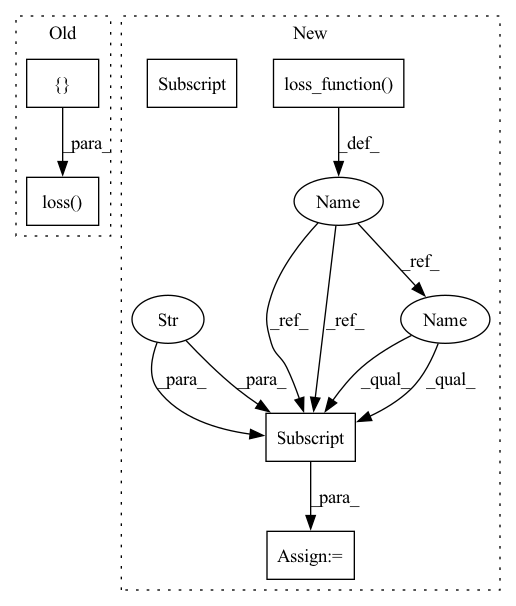

Pattern ID :17524

Before Change
data, target = data.to(self.device), target.to(self.device)
pred_target = self.model(data)
loss = self.task.loss({"labeled_data_targets": target,
"labeled_data_pred_targets": pred_target})
if self.digest is not None:
self.digest.cache_data(batch_idx, data)
After Change
output = self.model(input)
loss_dict = self.model.loss_function(config=self.task.config["loss"],
output=output,
target=target,
kld_weight=input.size(0) / len(dataloader.dataset))
loss = loss_dict["loss"]
if self.digest is not None:
self.digest.cache_data(batch_idx, input)
In pattern: SUPERPATTERN
Frequency: 3
Non-data size: 6
Instances
Fragment ID: 58008247
Project Name: mstoelzle/solving-occlusion
Commit Name: 182a7f2561bf9c95cb8f353023d62454a2ca87ca
Time: 2020-08-18
Author: maximilian@stoelzle.ch
File Name: src/learning/supervised_learning.py
M Class Name: SupervisedLearning
N Class Name: SupervisedLearning
M Method Name: train_epoch(2)
N Method Name: train_epoch(2)
M Parent Class: BaseLearning
N Parent Class: BaseLearning
M File Name: src/learning/supervised_learning.py
N File Name: src/learning/supervised_learning.py
M Start Line: 32
M End Line: 34
N Start Line: 34
N End Line: 38
'>
Before Change
data, target = data.to(self.device), target.to(self.device)
pred_target = self.model(data)
self.task.loss({"labeled_data_targets": target,
"labeled_data_pred_targets": pred_target})
self.controller.add_state(epoch, self.task.loss.get_epoch_loss(), self.model.state_dict())
After Change
output = self.model(input)
loss_dict = self.model.loss_function(config=self.task.config["loss"],
output=output,
target=target,
kld_weight=input.size(0) / len(dataloader.dataset))
loss = loss_dict["loss"]
self.controller.add_state(epoch, self.task.loss.get_epoch_loss(), self.model.state_dict())
'>
Fragment ID: 58008248
Project Name: mstoelzle/solving-occlusion
Commit Name: 182a7f2561bf9c95cb8f353023d62454a2ca87ca
Time: 2020-08-18
Author: maximilian@stoelzle.ch
File Name: src/learning/supervised_learning.py
M Class Name: SupervisedLearning
N Class Name: SupervisedLearning
M Method Name: validate_epoch(2)
N Method Name: validate_epoch(2)
M Parent Class: BaseLearning
N Parent Class: BaseLearning
M File Name: src/learning/supervised_learning.py
N File Name: src/learning/supervised_learning.py
M Start Line: 52
M End Line: 54
N Start Line: 58
N End Line: 62
'>
Before Change
data, target = data.to(self.device), target.to(self.device)
pred_target = self.model(data)
self.task.loss({"labeled_data_targets": target,
"labeled_data_pred_targets": pred_target})
After Change
output = self.model(data["occluded_elevation_map"])
kld_weight = data["occluded_elevation_map"].size(0) / len(dataloader.dataset)
loss_dict = self.model.loss_function(config=self.task.config["loss"],
output=output,
target=data["elevation_map"],
kld_weight=kld_weight)
loss = loss_dict["loss"]
'>
Fragment ID: 58008250
Project Name: mstoelzle/solving-occlusion
Commit Name: 09743506305d981b25246a758e3fc7a28ddeaa2c
Time: 2020-09-04
Author: maximilian@stoelzle.ch
File Name: src/learning/base_learning.py
M Class Name: BaseLearning
N Class Name: BaseLearning
M Method Name: test(1)
N Method Name: test(1)
M Parent Class: ABC
N Parent Class: ABC
M File Name: src/learning/base_learning.py
N File Name: src/learning/base_learning.py
M Start Line: 126
M End Line: 130
N Start Line: 125
N End Line: 136